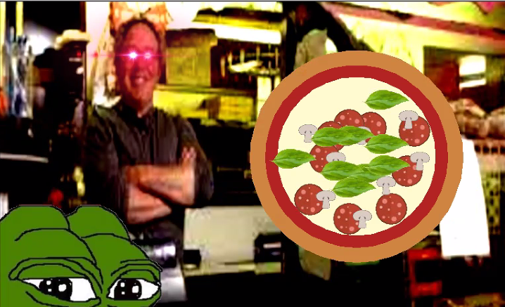
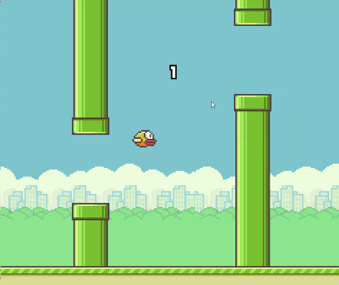
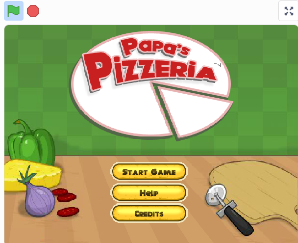

Lightbot

my projects:
Lightbot
Pizza Program 2.0
Our project is a simulation of a customer’s experience at Pepe’s Pizzeria. The user can select size, crust thickness, sauce, topping options, and cooking time of their pizza through the console. We utilized Python’s background image options to make our program more realistic to the user as well as images to replicate the pizzeria experience.
Rocket Blasters

Our project is a game with a rocket in space that dodges and shoots at meteors that fall down from the top. For every meteor that is hit, five points are added to the score. If a meteor reaches the bottom, one point is deducted from the score. After 30 seconds, the time is up and you are presented with your final score.
Flappy Bird
Our project is based off of the internet game "Flappy Bird", where you click/press space to jump above and below pipes that move across the screen. Everytime you pass a pipe, you earn a point, and once you hit a pipe, you lose. We used lists to repeat the pipe generation off the screen, and used velocity to mimick gravity for the bird to fall.
Papa's Pizzeria
Our project is a knock-off version of Papa's Pizzeria, a flash game found in coolmath. The user can pick a difficulty level that determines how many toppings the customer wants. They take the order of customer and can proceed to toppings and baking. After the final stage, Cutting, the cook can submit their creation to the customer to be graded. Click to play!